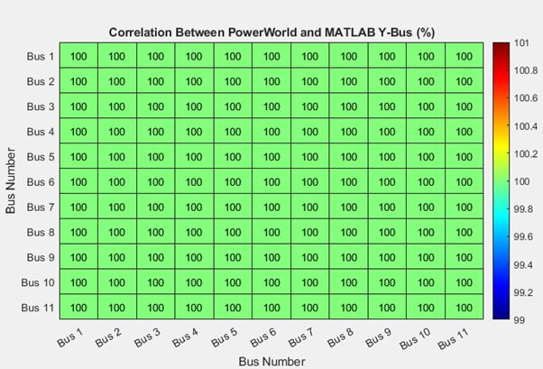

Why it matters
Protection relays decide in milliseconds whether to trip a breaker. Their settings come from fault studies like this one: how much current flows, and where, when something shorts. I test those relays at work, so this was the theory behind my day job.

By hand first
Every impedance was converted to a common 100 MVA base. From there I built the network matrices and the positive, negative and zero sequence networks that describe unbalanced faults. MATLAB then calculated three-phase, single-line-to-ground and line-to-line fault currents at every bus, plus how much each generator contributed.
Earthing
Earth faults can be limited with a resistor between a generator's neutral and ground. I sized these resistors to hold earth-fault current to about a tenth of the three-phase fault level, and modelled an earthing point on the 11 kV ring.
Then the check
I rebuilt the network in PowerWorld Simulator and compared the results. The calculated fault currents agreed within 0.01% at all 11 buses.
